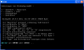

Datei:Changes5.PNG
Aus Lowlevel

Changes5.PNG (730 × 434 Pixel, Dateigröße: 23 KB, MIME-Typ: image/png)
Dateiversionen
Klicke auf einen Zeitpunkt, um diese Version zu laden.
| Version vom | Vorschaubild | Maße | Benutzer | Kommentar | |
|---|---|---|---|---|---|
| aktuell | 13:06, 17. Jul. 2011 |  | 730 × 434 (23 KB) | WinSysCompany (Diskussion | Beiträge) |
- Du kannst diese Datei nicht überschreiben.
Dateiverwendung
Diese Datei wird auf keiner Seite verwendet.